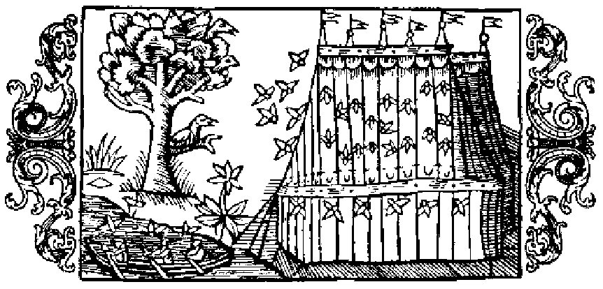

Om de besvärliga myggen i den yttersta Norden

I Norden aflägsnaste trakter är man, så till lands som på vattnet, högeligen besvärad af stora myggor, i synnerhet af deras stygn och odrägliga pipande, när man nödgas sofva i den ljusa dager, som där ständigt både dag och natt är rådande. För att nu undgå denna plåga nyttja nordborna malört, som de dränka i ättika och sedan torka och röka, att myggorna, när de känna den fräna lukten däraf, måtte fly sin kos. Likaså gifva dessa sig af, när man bestänker hufvud och lemmar med ett uppkok på malört, ruta eller svartkummin, om man så hafva kan; man kan också använda skomakarsvärta i förening med svedt och rökt enris. Men när man vill sofva, måste man ha ett litet tält, gjordt af linneväf eller näfver, för att under detta hölje kunna slumra trygg för myggornas angrepp och vara alldeles afstängd från dessa pipande insekter, så att man ej under hyllan besväras af två onda ting: deras stygn och deras odrägliga läte. — Den skaparmakt och den obeskrifliga fulländning, som röjer sig i myggans daning, skildrar Plinius förträffligt sålunda (bok 11, kapitel 2): ›När det gällde stora eller åtminstone jämförelsevis stora kroppar, var det danande arbetet lätt på grund af stoffets bildbara beskaffenhet; men i dessa så obetydliga, ja försvinnande små varelser, hvilken planmässighet, hvilken makt, hvilken obeskriflig fulländning visar sig ej där! Hvar har naturen i myggan förlagt så många sinnen — för att nu icke tala om andra, ännu mindre djur? Hvar har den insatt hennes syn, hennes smak, hennes lukt? Hvar denna ilskna och jämförelsevis starka stämma, som är henne medfödd? Hur fint och nog grant har den icke fästat vingarna, gjort benen långa, inrättat den tomma hålan till buk, upptändt hennes efter blod, helst människans, snikna törst! Med hvilken konst har den icke spetsat hennes gadd för att genomborra huden! Och fastän gadden i själfva verket är så liten, att den icke kan urskiljas, har dock naturen, liksom hade den haft god plats att tillgå, på dubbelt sätt däri visat sin växlande konst, i det den danats såväl spetsig för att stinga som ihålig för att suga.› — Myggan har alltså i munnen en gadd (aculeus), efter hvilken hon fått sitt namn (Culex). Därmed genom, borrar hon lefvande varelsers hud, för att få dricka deras blod; men allra mest blodtörstig visar hon sig i middagssolens brand, ty hon åtrår dess värme så mycket, att hon till och med stundom far illa och blir svedd i solgasset. Hon flyger icke till söta ämnen, utan uppsöker de sura. Det gifves äfven ett annat slags myggor, som äro vida spensligare och hålla till på späda ekar, på kvistar under rosorna och på andra skott, som nyss spirat upp ur jorden. De fördrifvas emellertid af stark blåst, eller också förjagar man dem genom att stänka svafladt vatten öfver kvistarna.
- Myggen synnerligen besvärlig i Norden.
- Medel mot myggen.
- Myggtält nödvändigt.
- Den underbara finheten och makten i myggans daning.
- Myggans gadd ihålig.
- Myggan skyr det söta och uppsöker det sura.
- Ett sätt att förjaga myggen.